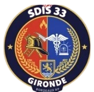

Le Servivce Départemental d'Incendie et de Secours de la Gironde (SDIS 33) est un acteur essentiel de la sécurité et de la protection des populations sur l'ensemble du département de la Gironde.
Ses missions sont multiples : secourir les personnes, lutter contre les incendies, intervenir lors d'accidents et faire face aux différentes situations d'urgence et de danger. Le SDIS 33 participe également à la prévention des risques et à la sensibilisation de la population aux comportements de sécurité.
Composé de professionnels et de volontaires engagés, le SDIS 33 repose sur des valeurs fondamentales telles que l'engagement, le courage, la solidarité, le respect et le sens du service public.
À travers son organisation et ses équipes, le SDIS 33 contribue quotidiennement à la sécurité de la population girondine et à la réponse aux situations d'urgence.